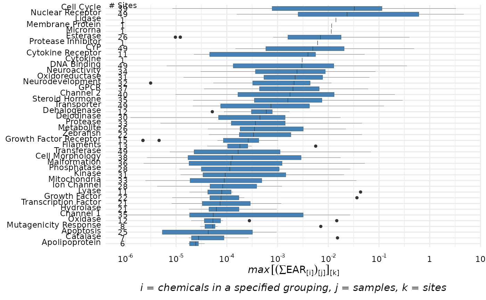
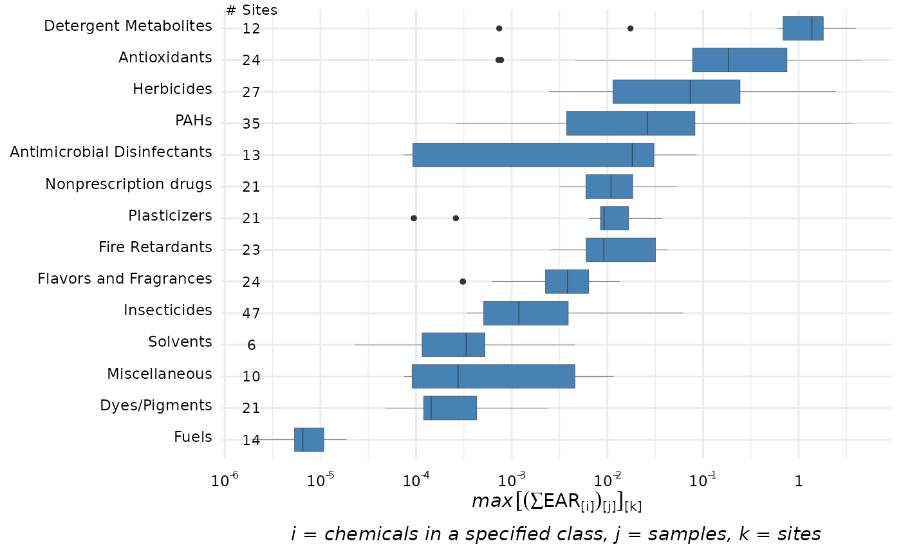
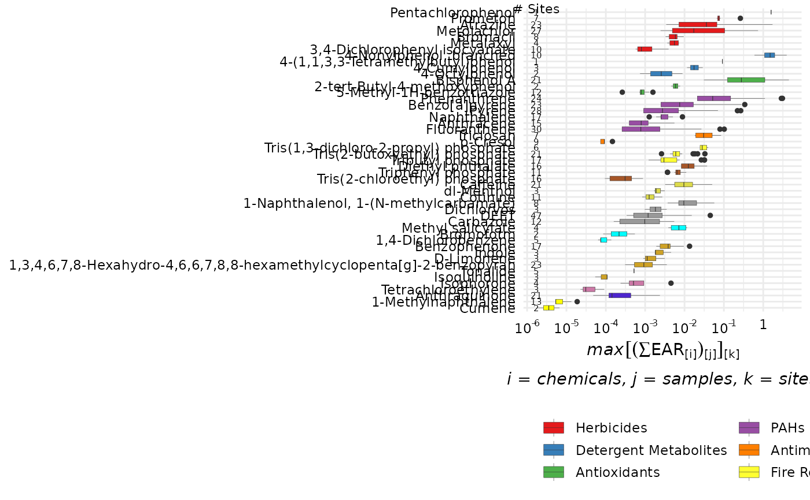
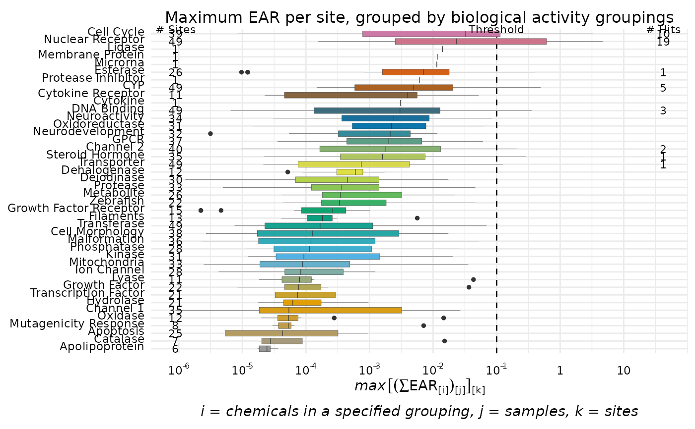
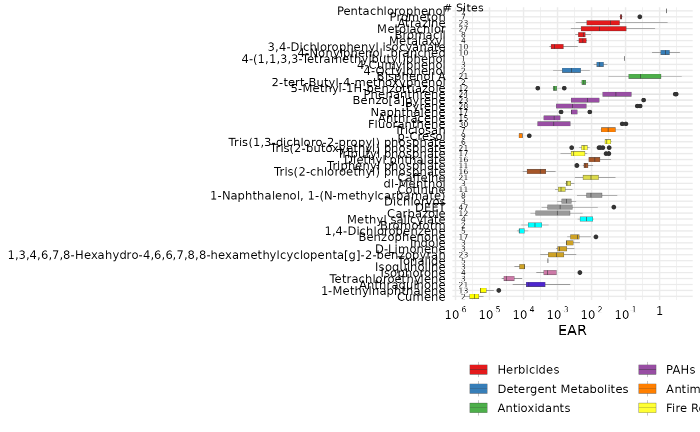
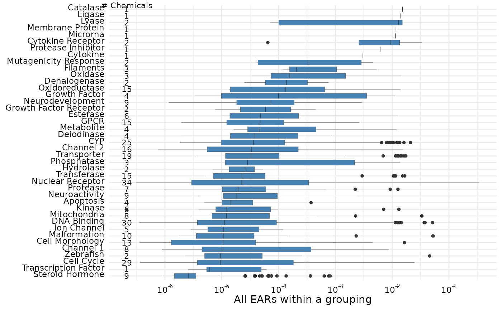
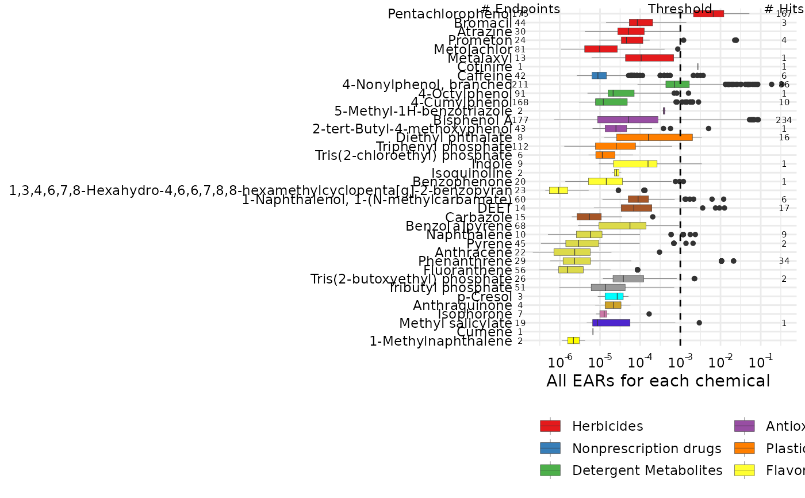

The plot_tox_boxplots function creates a set of boxplots representing EAR
values computed with the get_chemical_summary function, and
dependent on the choice of several input options. See "Summarizing the data"
in the Introduction vignette: vignette("Introduction", package = "toxEval").
for a description of how the EAR values are computed, aggregated,
and summarized. Choosing "Chemical Class" in the category argument
will generate separate boxplots for each unique class. "Chemical" will generate
boxplots for each individual chemical, and "Biological" will generate boxplots
for each group in the selected ToxCast annotation.
plot_chemical_boxplots( chemical_summary, ..., manual_remove = NULL, mean_logic = FALSE, sum_logic = TRUE, plot_ND = TRUE, font_size = NA, title = NA, x_label = NA, palette = NA, hit_threshold = NA ) plot_tox_boxplots( chemical_summary, category = "Biological", manual_remove = NULL, mean_logic = FALSE, sum_logic = TRUE, plot_ND = TRUE, font_size = NA, title = NA, x_label = NA, palette = NA, hit_threshold = NA )
| chemical_summary | Data frame from |
|---|---|
| ... | Additional group_by arguments. This can be handy for creating facet graphs. |
| manual_remove | Vector of categories to remove. |
| mean_logic | Logical. |
| sum_logic | Logical. |
| plot_ND | Logical. Whether or not to plot "Biological" groupings, "Chemical Class" groupings, or "Chemical" that do not have any detections. |
| font_size | Numeric value to adjust the axis font size. |
| title | Character title for plot. Default is NA which produces no title. |
| x_label | Character for x label. Default is NA which produces an automatic label. |
| palette | Vector of color palette for boxplot fill. Can be a named vector to specify specific colors for specific categories. |
| hit_threshold | Numeric threshold defining a "hit". |
| category | Character. Either "Biological", "Chemical Class", or "Chemical". |
It is also possible to display a threshold line using the hit_threshold argument. The graph will then include the number of sites with detections, the threshold line, and the number of "hits" indicating how many sites that have EAR values exceeding the hit_threshold.
The graph shows a slightly different result for a single site. For a single site graph, the number of chemicals that were detected and have associated endpoint ACCs represented are displayed.
The functions plot_tox_boxplots and graph_chem_data are functions that perform
the statistical calculations to create the plot. graph_chem_data is specific
to the "Chemical" plot, and plot_tox_boxplots is for "Biological" and
"Chemical Class".
Box plots are standard Tukey representations. See "Box plot details" in the Basic Workflow vignette:
vignette("basicWorkflow", package = "toxEval")
for more information.
# This is the example workflow: path_to_tox <- system.file("extdata", package="toxEval") file_name <- "OWC_data_fromSup.xlsx" full_path <- file.path(path_to_tox, file_name) tox_list <- create_toxEval(full_path) ACC <- get_ACC(tox_list$chem_info$CAS) ACC <- remove_flags(ACC) cleaned_ep <- clean_endPoint_info(end_point_info) filtered_ep <- filter_groups(cleaned_ep) chemical_summary <- get_chemical_summary(tox_list, ACC, filtered_ep) plot_tox_boxplots(chemical_summary, "Biological")plot_tox_boxplots(chemical_summary, "Chemical Class")plot_tox_boxplots(chemical_summary, "Chemical")cbPalette <- c("#999999", "#E69F00", "#56B4E9", "#009E73", "#F0E442", "#0072B2", "#D55E00", "#CC79A7") graphData <- tox_boxplot_data(chemical_summary = chemical_summary, category = "Biological") cbValues <- colorRampPalette(cbPalette)(length(levels(graphData$category))) names(cbValues) <- levels(graphData$category) plot_tox_boxplots(chemical_summary, hit_threshold = 0.1, category = "Biological", palette = cbValues, title = 'Maximum EAR per site, grouped by biological activity groupings')# \donttest{ plot_tox_boxplots(chemical_summary, category = "Chemical", x_label = "EAR")single_site <- dplyr::filter(chemical_summary, site == "USGS-04024000") plot_tox_boxplots(single_site, category = "Biological")plot_tox_boxplots(single_site, category = "Chemical", hit_threshold = 0.001)#> Warning: Transformation introduced infinite values in continuous y-axis#> Warning: Transformation introduced infinite values in continuous y-axis# }